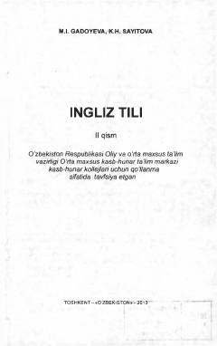

ITKasb-hunar kollejlari uchun mo'ljallangan ingliz tili o'quv qo'llanmasining ikkinchi qismi.
Ushbu qo'llanma kasb-hunar kollejlari talabalari uchun mo'ljallangan bo'lib, ingliz tilini o'rganish bo'yicha nazariy va amaliy mashg'ulotlarni o'z ichiga oladi. Kitob fonetika, grammatika, kundalik mavzular va davlatchilik hamda iqtisodiyotga oid matnlarni qamrab olgan.